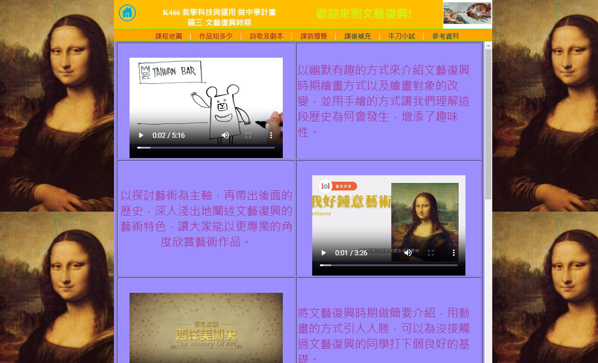
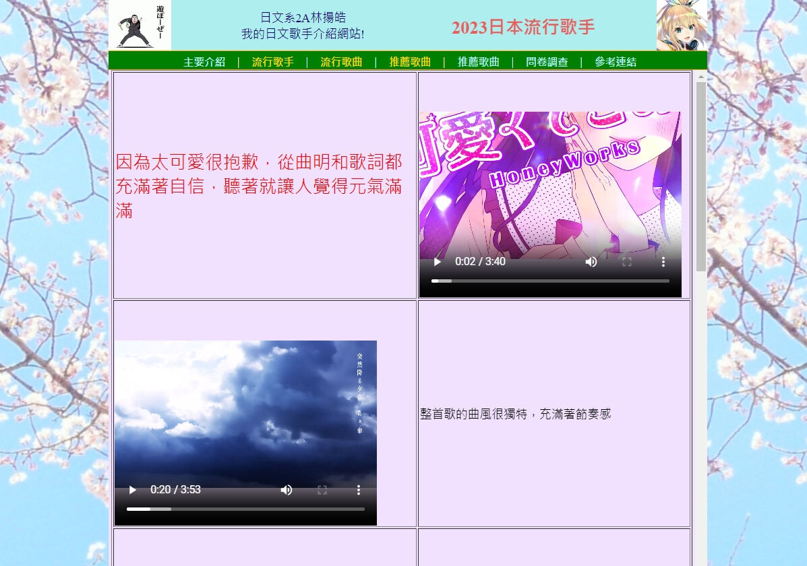

4.html, 用 記事本/notepad，以原始碼編輯
#4 page 自有短片講義 (影/音/文並存)
自拍自錄的影音檔(or from GAI)，一律採用 .mp4 格式
需影音檔內容對位，以影音檔展現概念，用文字說明敘事，4X2
Your browser does not support the video tag.
編碼解析: video width="400" height="300" controls autoplay + source src="video/elt4.mp4" type="video/mp4"

